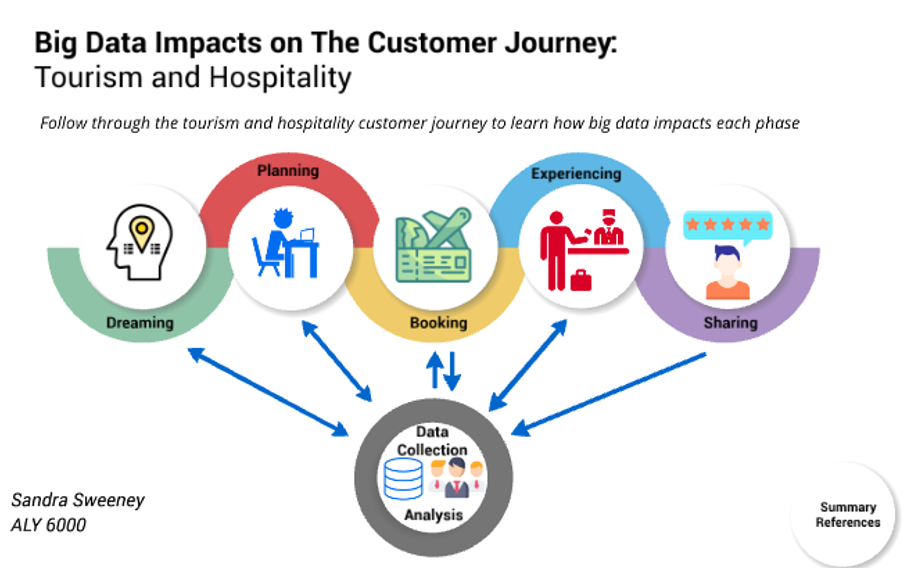

Ni Wayan Sumartini Saraswati
Desember, 2023
PERKEMBANGAN BIG DATA ANALYTICS DI BIDANG PARIWISATA
Revolusi Big data Pariwisata
Untuk mempertahankan kelangsungan hidup dari sebuah bisnis maka adaptasi terhadap transformasi digital dan kemajuan teknologi menjadi sebuah keharusan, tidak terkecuali untuk industri pariwisata. Lingkungan online memungkinkan perubahan cara orang untuk mendapatkan informasi begitu juga untuk menyumbang informasi ke dalam platform digital.

Dampak transformasi digital dalam Perjalanan Wisata. Sumber : (Sweeney, 2019)
Melalui big data, industri pariwisata berpotensi mengembangkan sistem model prediktif yang sangat berguna untuk meningkatkan efisiensi layanan dan produk ke pelanggan melalui pemahaman yang lengkap terhadap pengalaman dan preferensi pelanggan. Bagaimana kontribusi big data dalam pariwisata setidaknya digambarkan ke dalam 6 manfaat utama (Kraus, 2017):
-
Reliabilitas
Data yang diekstraksi dengan aplikasi big data didasarkan pada tindakan konsumen yang sebenarnya dan bukan pada data yang diperoleh dari survei, prediksi, atau proyeksi. Oleh karena itu, hasil yang diperoleh bersifat objektif, bukan penilaian yang dapat ditafsirkan berbeda-beda.
-
Representasi
Semakin banyak sumber pengumpulan data, semakin baik representasi sampelnya. Kerangka pengambilan sampel berdasarkan data yang dikumpulkan secara akurat yang meningkat jauh dibandingkan dengan yang diekstraksi dari studi penelitian konvensional.
-
Detail informasi dan kapasitas segmentasi
Berkat big data, perusahaan mengetahui volume aktual pelanggan, kebiasaan dan preferensi mereka, dan berdasarkan itu, mereka dapat memprediksi, misalnya, harga yang paling sesuai untuk setiap pelanggan dan meningkatkan pengalaman mereka.
-
Hibridisasi data dengan sumber lain saat ini atau di masa mendatang
Baik data saat ini maupun yang akan datang dapat digabungkan dengan sumber informasi lain seperti data media sosial atau data publik. Penggabungan data yang diperoleh dengan variabel lain mengarah pada kesimpulan baru. Misalnya, kemungkinan tidak hanya memiliki catatan kedatangan wisatawan tetapi juga catatan kedatangan wisatawan yang diurutkan berdasarkan waktu, tempat asal, dan pengeluaran rata-rata.
-
Arus informasi baru
Big data muncul sebagai sumber ekstraksi data baru melalui teknologi yang disediakan sendiri oleh wisatawan (seperti pembayaran kartu atau koneksi perangkat selulernya). Selain itu, munculnya teknologi portabel dan ledakan aplikasi smartphone memungkinkan untuk menilai layanan dan berbagi pendapat secara online sehingga peluang untuk mendapatkan kerangka sampel yang jauh lebih besar meningkat secara signifikan.
-
Kesempatan untuk peluang bisnis baru
Perusahaan dapat membandingkan data internal mereka dengan hasil yang diperoleh dengan menerapkan big data, ini memungkinkan untuk menentukan apakah penawaran layanan menyesuaikan dengan permintaan wisatawan dan memiliki informasi yang diperlukan untuk mendefinisikan ulang jika penawaran tersebut kurang sesuai. Dengan cara ini, peluang untuk berinovasi, menghasilkan lini bisnis baru, dan menyesuaikan pengalaman wisatawan menjadi muncul.
Big data analytics telah banyak digunakan dalam bidang manajemen perjalanan wisata. Misalnya, operator maskapai penerbangan menggunakan analitik untuk tidak hanya memahami pola pembelian dan perjalanan penumpang, tetapi juga mengumpulkan wawasan perilaku tentang demografi tertentu. Ini dapat mencerminkan pilihan tujuan dan waktu perjalanan pelanggan. Teknik seperti web scrapping dan social media listening dapat membantu untuk menganalisis electronic Word-of-Mouth (eWOM) dari berbagai layanan dan produk di industri ini (Saha, 2018).

Big data Analytics dalam Proses Perjalanan Wisata, sumber : (Saha, 2018)
Penelitian mengenai Big Data Pariwisata
Berdasarkan sumber data, big data terkait pariwisata terbagi dalam tiga kategori utama: data UGC (dihasilkan oleh pengguna), termasuk data tekstual online dan data foto online; data perangkat (berdasarkan perangkat), termasuk data GPS, data jelajah seluler, data Bluetooth, dll.; data transaksi (berdasarkan operasi), termasuk data pencarian web, data kunjungan halaman web, data pemesanan online, dll (Li et al., 2018).
Membawa informasi yang berbeda, maka tipe data yang berbeda menangani masalah pariwisata yang berbeda. Untuk setiap jenis, dilakukan analisis sistematis dari perspektif fokus penelitian, karakteristik data, teknik analisis, tantangan utama, dan arah lebih lanjut. Survei ini memfasilitasi pemahaman menyeluruh tentang penelitian yang baru berkembang ini dan menawarkan wawasan berharga tentang prospek masa depannya (Li et al., 2018).

Kategorisasi sumber big data pariwisata. Sumber : (Li et al., 2018)
Dukungan Big data untuk Model Layanan Smart Tourism
Visi smart tourism bertumpu pada kemampuan bisnis dan destinasi pariwisata untuk tidak hanya mengumpulkan sejumlah besar data, tetapi juga secara cerdas menyimpan, memproses, menggabungkan, menganalisis, dan menggunakan big data untuk merancang operasi pariwisata, layanan, dan inovasi bisnis (Xiang & Fesenmaier, 2017).

Big data Untuk Model Layanan Smart Tourism, Sumber : (Ke & Wanpeng, 2016)
Jika industri perjalanan dapat mengidentifikasi dan menargetkan pola perilaku pelanggan, ia dapat memanfaatkan data ini secara efisien. Target pemasaran, misalnya, secara langsung terkait dengan pemahaman dan klasifikasi perilaku pelanggan. Seperti gambar diatas, maka riwayat perjalanan sebelumnya, data tracking lokasi, klasifikasi wisatawan, dan informasi pariwisata umum dapat secara bersama-sama mendukung rekomendasi tujuan wisata yang spesifik untuk wisatawan tersebut.
Setidaknya ada beberapa karakteristik smart tourism kaitannya dengan dukungan big data analytics (Feliu, n.d.).
-
Kustomisasi dan Personalisasi
Dua kunci sukses dalam industri perjalanan adalah mempertahankan loyalitas pelanggan dan menarik pelanggan baru. Di pasar di mana konsumen memiliki pilihan tak terbatas, lebih penting dari sebelumnya untuk menarik emosi mereka. Big data memungkinkan perusahaan untuk melakukan hal ini. Tidak hanya memberikan wawasan tentang perilaku kelompok, tetapi juga memberikan informasi spesifik untuk setiap konsumen. Hal ini memungkinkan perusahaan untuk menawarkan layanan yang dipersonalisasi dan disesuaikan untuk konsumen. Hasil analisis big data memungkinkan perusahaan membuat penawaran dan promosi yang menarik bagi target konsumen.
-
Titik Penjualan Unik.
Perusahaan perlu mengetahui kekuatan dan kelemahan mereka agar tetap kompetitif. Ini berarti mengetahui apa yang membuat mereka istimewa tetapi juga apa yang kurang dari mereka. Informasi ini dapat dikumpulkan menggunakan Big data. Data ini membantu perusahaan meningkatkan sejumlah faktor, termasuk efektivitas biaya, desain produk, dan strategi pemasaran. Ini juga membantu mereka mendesain dan memasarkan brand kepada konsumen.
-
Real-time Travel Assistance.
Ponsel mampu menangkap Big data. Informasi ini kemudian memberikan data real-time kepada perusahaan di industri perjalanan tentang lokasi pelanggan. Ini dapat membantu mereka memberikan rekomendasi dan tips keselamatan yang bermanfaat kepada pelanggan saat mereka bepergian. Itu juga dapat mengingatkan pelanggan tentang penawaran dan promosi khusus saat berlibur.
-
Pendekatan Futuristik.
Mengidentifikasi tujuan dan rencana perjalanan wisatawan di masa depan sangat penting, dan Big data dapat membantu memperoleh informasi ini. Ini memungkinkan perusahaan perjalanan untuk secara proaktif menawarkan layanan dan paket pelanggan di tempat yang tepat yang diinginkan pelanggan.
Informasi ini tidak hanya memungkinkan pengalaman pelanggan yang lebih baik, tetapi juga membantu perusahaan menghemat uang. Daripada membuang uang ke saluran penjualan, perusahaan dapat mengidentifikasi dengan akurat kelompok pelanggan yang paling baik dipromosikan dengan kupon atau promosi khusus. Perusahaan tidak perlu membuang waktu dan uang untuk menjangkau prospek yang secara statistik tidak mungkin tertarik.